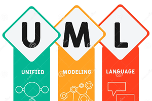

Presentación de la Materia
Guía de Trabajos Prácticos
Programa de la materia
Proyecto de Clases 2023
Guía de Trabajos Prácticos
Programa de la materia
Proyecto de Clases 2023

Unidad II: Ingeniería de Requerimientos
Ingenieria de Requerimientos
Template de Especificación de Requerimientos de Software
Ingenieria de Requerimientos
Template de Especificación de Requerimientos de Software

Unidad IV: Usabilidad
Usabilidad
Usabilidad: 8 Reglas de Oro de Shneiderman & 10 Principios Heurísticos de Nielsen
Diseño y Prototipado
Usabilidad
Usabilidad: 8 Reglas de Oro de Shneiderman & 10 Principios Heurísticos de Nielsen
Diseño y Prototipado

Unidad V: Modelado de Sistemas
Modelado de Sistemas
Diagramas UML
Modelado UML - Introducción
Diagrama de Casos de Uso
Diagrama de Clases
Diagrama de Secuencia
Modelado de Sistemas
Diagramas UML
Modelado UML - Introducción
Diagrama de Casos de Uso
Diagrama de Clases
Diagrama de Secuencia